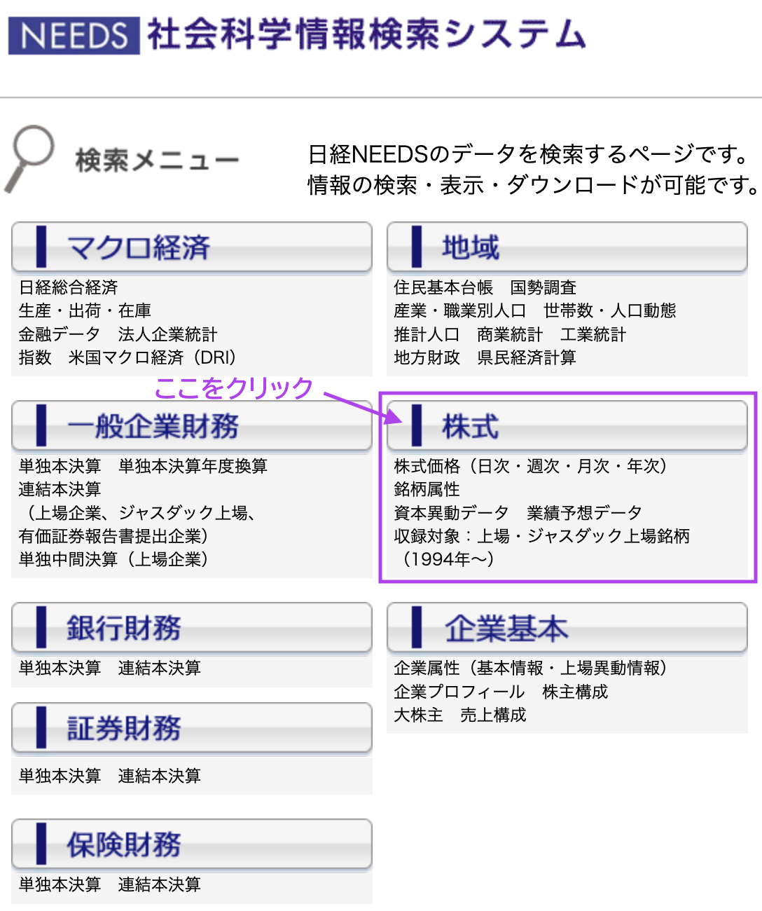
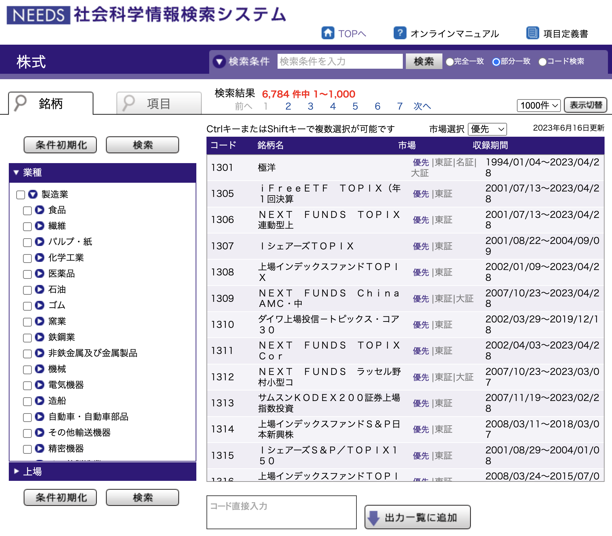
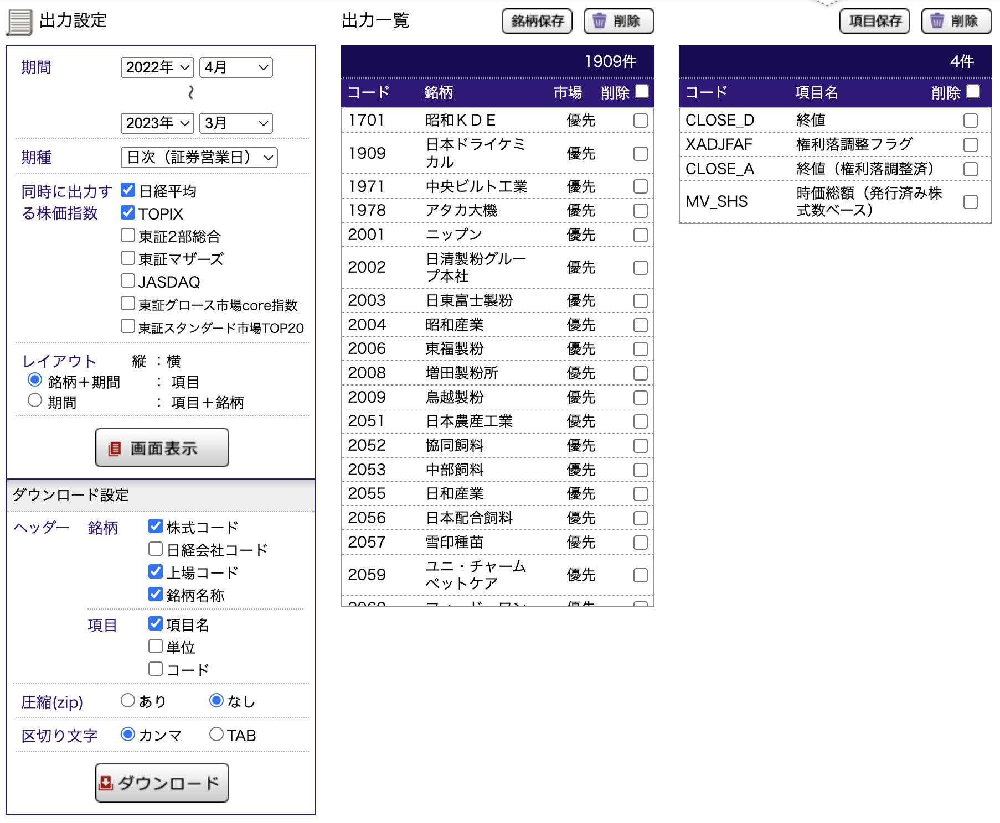

学外からはVPN接続でアクセスしよう
日経NEEDS社会科学情報検索システムを使い倒そう
選択した企業と項目は保存しておこう
ダウンロードしたcsvファイルをMS Excelで開かないようにしよう。
株価データはデータが大きくなりがちなので、どの期間、どの企業の株価を集めるのか、しっかり計画を当ててからデータを入手しましょう。
では日経MMが提供しているデータベース日経NEEDS から株価データをダウンロードしてみます。
これが日経NEEDS社会科学情報検索システムのトップページです。 今回は、株価データ を入手するため「株式 」をクリックします。

「株式」のトップページは企業財務と同じように、上下2つのパートで構成されています。
 
上のパートは、企業や株式項目を選択する場所です。 左上のタグに「企業」と「項目」があり、「企業」タグでサンプルとしたい企業を選択し、「項目」タグで入手したい株式項目を選択します。
企業タグ
企業タグは企業財務データのときと同じですが，選べる項目が，
しかありません。 全業種・全東証上場，といったように，業種や上場の条件を指定して企業を選択します。
項目選択
つぎに「項目」タグから必要な株式データの項目を選びます。
「項目一覧」には，
株価 銘柄属性 : 産業や上場場など
資本移動（年次収録なし）
業績予想 : 業績予想データも一応入手できる。
の4つのみの分類しかないです。 取引所で取引された株価の最後の金額である「終値」を取得するには、「株価」の「終値」を選択します。 ここでは，
CLOSE_D : 終値CLOSE_A : 終値（権利落調整済）MV_SHS : 時価総額（発行済み株式数ベース）
を選択してみます。
権利落ち調整済みの株価データ
日経は，調整係数を使用して，市場ごとに以下の算式にて調整済み株価データを算出しています。
\[
\text{権利落ち調整済み株価} = \frac{V_i \times A_i}{A_j}
\] ここで，
\(V_i\) : \(i\) 時点の株価\(A_i\) : \(i\) 時点の新累積調整係数\(A\) \(A_j\) : 直近の新累積調整係数\(A\)
調整係数 とは，当日を含めた過去直近の権利落ちに対する，権利付き期間を権利落後の株価水準に調整するための係数です。
累積調整係数 とは，権利落ち日が到来するたびに、上記調整係数を累積積算した係数のことです。理論上は最古期の累積調整係数を1として常に直近の累積値に掛け合わせますが、計算上はゼロへの収束を避けるため、調整係数の逆数を累積積算 しています。 権利落ち日でなければ、前日の累積調整係数を引き継ぎます。
出力設定
上のパートで企業と項目を選択したら、次の下パートの「出力設定」で、データの入手期間や、データの種類を選択します。 左側の項目で、サンプルの期間や、決算の種類、レイアウトを選択します。
期間・期種・株式指数
下パートの左列で，
データの取得期間
株価データの期種：日次，週次，月次，年次
同時に出力する株価指数：日経平均やTOPIXなど
を指定します。 数年間にわたる株価を日次で取得すると，データ数が膨大になるので，気をつけましょう。 株価指数は日経平均とTOPIXを選択しておくとよいでしょう。
レイアウトについては変更する必要は無いでしょう。
選択した銘柄保存と項目保存は企業財務データと同様に，保存して残しておくようにしましょう。 再現可能性を担保するためには，サンプル選択の手順を残しておくことが重要です。
データの入手
今までの作業で、企業と項目の選択が終わり、データの入手期間や連結単体の選択が終わったら、あとはデータをcsvファイルとしてダウンロードするだけです。
最後に、大事なことなので何度でも書きます。 ダウンロードしたcsvファイルをMS Excelで開かないようにしよう。
株価データ分析の実践
では，上の操作で取得した，2022年4月1日から2023年3月31日の期間，東京証券取引所に上場している製造業の日次株価データを使って，株価データの分析をしてみましょう。 株価データを収録しているcsvファイルはstockprice_TSE_manufacture.csvという名前で保存して，imgフォルダに入れています。 このファイル名やフォルダ名は，自分の環境に合わせて変更してください。
── Attaching core tidyverse packages ──────────────────────── tidyverse 2.0.0 ──
✔ dplyr 1.1.3 ✔ readr 2.1.4
✔ forcats 1.0.0 ✔ stringr 1.5.0
✔ ggplot2 3.4.2 ✔ tibble 3.2.1
✔ lubridate 1.9.2 ✔ tidyr 1.3.0
✔ purrr 1.0.2
── Conflicts ────────────────────────────────────────── tidyverse_conflicts() ──
✖ dplyr::filter() masks stats::filter()
✖ dplyr::lag() masks stats::lag()
ℹ Use the conflicted package (<http://conflicted.r-lib.org/>) to force all conflicts to become errors
<- read_csv ("data/stockprice_TSE_manufacture.csv" )
Rows: 467705 Columns: 10
── Column specification ────────────────────────────────────────────────────────
Delimiter: ","
chr (2): 上場コード, 銘柄名称
dbl (6): 日経平均, TOPIX, 株式コード, 終値, 終値（権利落調整済）, 時価総額（発行済み株式数ベース）...
lgl (1): 権利落調整フラグ
date (1): 期間
ℹ Use `spec()` to retrieve the full column specification for this data.
ℹ Specify the column types or set `show_col_types = FALSE` to quiet this message.
46万7705件の株価データを読み込みました。 ここで利用するのは，
期間
株式コード
終値
日経平均
時価総額（発行済み株式数ベース）
の5つだけなので，不要なデータは削除しておきます。 変数名に括弧（）があると，エラーが起こるので，クォーテーション”`“で囲っておきます。
<- df |> select (期間, 株式コード, 終値, 日経平均, ` 時価総額（発行済み株式数ベース） ` )
<- df |> rename (date = ` 期間 ` ,Scode = ` 株式コード ` ,close = ` 終値 ` ,N225 = ` 日経平均 ` ,market_cap = ` 時価総額（発行済み株式数ベース） ` summary (df) # データを確認
date Scode close N225
Min. :2022-04-01 Min. :1701 Min. : 3 Min. :25717
1st Qu.:2022-07-01 1st Qu.:4538 1st Qu.: 716 1st Qu.:26700
Median :2022-09-30 Median :6106 Median : 1365 Median :27395
Mean :2022-10-01 Mean :5683 Mean : 2153 Mean :27290
3rd Qu.:2022-12-29 3rd Qu.:6842 3rd Qu.: 2430 3rd Qu.:27819
Max. :2023-03-31 Max. :9922 Max. :72730 Max. :29223
NA's :120920
market_cap
Min. :5.930e+08
1st Qu.:7.210e+09
Median :2.288e+10
Mean :2.608e+11
3rd Qu.:9.066e+10
Max. :3.713e+13
NA's :115265
日次株価データは，取引所が営業している日に株価が付いているので，土日や祝日は株価が付いてないことに注意しましょう。
トータル・リターン
次に株価の変化率を計算する。 株価の変化率は株式リターン (stock return)とか，単にリターン と呼ばれることもありますが，ここではトータル・リターン と呼ぶことにします。
\(t\) 期のトータル・リターン\(R_t\) の計算式は，以下のようになります。
\[
R_t = \frac{P_t - P_{t-1}}{P_{t-1}} = \frac{P_t}{P_{t-1}} - 1
\]
ここでは，配当や株式分割などがないと仮定しています。
<- df |> group_by (Scode) |> mutate (return = close / lag (close) - 1 ,return_N225 = N225 / lag (N225) - 1 ,|> ungroup ()
日経平均のトータル・リターンのヒストグラムを描いてみましょう。
summary (df_return$ return_N225)
Min. 1st Qu. Median Mean 3rd Qu. Max. NA's
-0.0301 -0.0071 0.0009 0.0001 0.0067 0.0325 1909
ggplot (df_return) + aes (x = return_N225) + geom_histogram (bins = 50 )
Warning: Removed 1909 rows containing non-finite values (`stat_bin()`).
日経平均の時系列の推移を確認するため，折れ線グラフを書いてみます。 まず時点を表すdate変数をDate型に変換します。
日経平均の折れ線グラフを描いてみましょう。
<- df_return |> mutate (date = ymd (date)ggplot (df_return) + aes (x = date, y = N225) + geom_line () + geom_point ()
次に，日経平均のトータル・リターンの推移を確認するため，折れ線グラフを書いてみます。
ggplot (df_return) + aes (x = date, y = return_N225) + geom_line () + geom_point ()
Warning: Removed 1909 rows containing missing values (`geom_line()`).
Warning: Removed 1909 rows containing missing values (`geom_point()`).